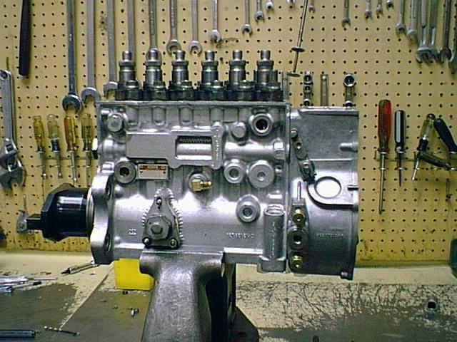
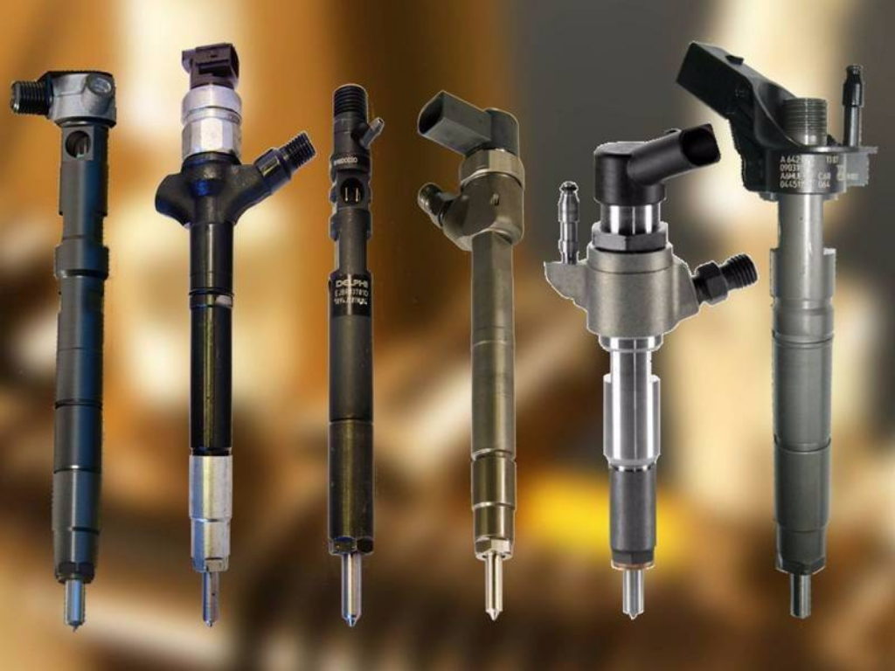

Services

Diagnostics, adjustment and repair of in-line IP
Diagnostics of IP at a specialized stand of our service will help to identify the causes of a problem in the operation of the car.
Problematic IP can be the cause of:
- Increased fuel consumption
- Increased smoke
- Car power reduction
- Difficulties in starting the engine
- Inaccuracies at idle
- Accelerated wear of fuel pump parts
- Extraneous noise in the car
It is extremely undesirable to ignore such problems, because they can lead to more serious damage and more expensive repairs.

Diagnostics and repair of Common Rail injectors
The operation of the diesel engine, fuel consumption, and power generally depend on the degree of deterioration of the nozzle and the correctness of its setting. For a quality check, adjustment or repair of nozzles, a specialized stand, a special tool and considerable experience in carrying out such work are required.
Indirect signs of problems with Common Rail injectors are:
| Significant power reduction |
| Increasing fuel consumption |
| Engine malfunctions |
| Difficult start of the engine |
| A knock (clatter) during engine operation |